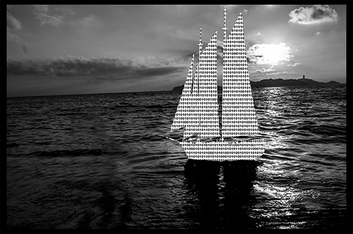
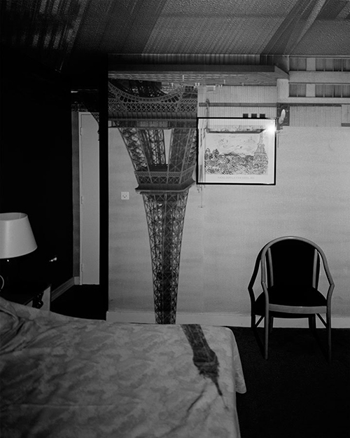
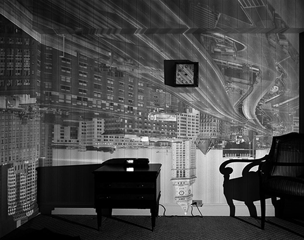

Acerca de la materialidad en la fotografía digital
Ramses Tonatiuh Macedo Sánchez
El presente escrito surge del espacio curricular: Materialidad y Conservación, de la Maestría en Conservación de Acervos Documentales de la ENCRYM.
Para hablar de fotografía digital quisiera puntualizar tres cuestiones previas. Toda vez que la fotografía digital es un objeto producto de la invención humana, ¿cómo son transmitidas las imágenes mediante objetos por las obras de arte? Dado que la imagen es algo que habita los objetos, ¿cómo es que estas representaciones crean en las personas experiencias? Y es que las imágenes son entendidas gracias a la manera en que las personas interactúan con los objetos.
Para responder a estas interrogantes comenzaré explorando la explicación que brinda Hannah Arendt a la creación del mundo de las cosas, para, a partir de ello, remitirme a la teoría de la materia en la obra de arte, propuesta por Cesare Brandi, sobre cómo este mundo de cosas representa para las personas otras diferentes. Por último, utilizando la teoría de la percepción en la performatividad propuesta por Erika Fischer, intentaré ofrecer una aproximación a la idea de materialidad que propongo para la fotografía digital.
La fotografía forma parte de los objetos del mundo material creados por el hombre y se ha visto sometida a una amplia transformación en un período de tiempo relativamente corto, desde su aparición en la primer mitad del siglo XIX, —cuando los procesos técnicos para la creación de imágenes fotográficas eran verdaderamente complejos—, hasta la actualidad, en donde la tecnología ha permitido que casi cualquier persona tenga en su bolsillo un teléfono celular con cámara integrada, una cámara digital o algún artefacto de este tipo que le permita crear fotografías digitales de manera casi instantánea.
Al hablar de fotografía digital, me refiero a la imagen producida mediante sensores electrónicos, los cuales son capaces de transformar impulsos luminosos en información digital, para luego ser almacenados en memorias (digitales también). Esto significa que la luz es transformada y codificada en dígitos: unos y ceros1 del sistema binario con que funcionan las computadoras, en las cuales podemos observar las fotografías digitales. Estos dígitos representan la información que habrá de ser interpretada por los sistemas computacionales, para así poder crear la fotografía digital.

Figura 1. Macedo, R. (2012) [fotografía].
Asimismo, es preciso señalar dos usos del termino información:
A lo largo del tiempo, el hombre ha utilizado la materia y la ha convertido en material, creando con este un mundo habitable hecho de objetos materiales. A diferencia de la materia, el material ya es un producto de la mano humana, que ha sido extraído de su origen natural (como el caso del árbol del cual se extrae la madera) para la creación de objetos de uso. Estos objetos, de acuerdo con su descripción, deben ser utilizados, pues de lo contrario, simplemente se degradan y vuelven al proceso natural del cual el hombre los ha extraído. “Abandonada a sí misma o arrojada del mundo humano, la silla se convertirá de nuevo en madera y la madera se degradará y retornará a la tierra de la que había surgido el árbol antes de ser talado y devenir en material sobre el que trabajar y con el que construir” (Arendt, 1995; 96-97). Sin embargo, el hombre no solamente crea los objetos; además, fija en ellos sus recuerdos, sentimientos, costumbres y un sinfín de contenidos semánticos, reposicionando los objetos de la vida cotidiana y colocándolos dentro de esferas de contemplación y apreciación muy diversas. De esta manera, la materia adquiere otro tipo de cualidades: la materia es transformada en material; y cuando los sentimientos son ligados a los objetos, estos son materializados.
Sería poco prudente descartar de la materialidad en fotografía digital, soportes tales como cables, memorias, discos duros u otros dispositivos, ya que estos hacen posible la aparición de la imagen; sin embargo, sería muy osado también atribuirles por completo la responsabilidad de materializar la imagen fotográfica pues, “los medios físicos que garantizan la transmisión de la imagen, no están adosados a ella, sino que le son consustanciales: no está la materia2 por un lado y la imagen por otro” (Brandi, 2008; 16).
Brandi propone un concepto de materia en el que esta se presenta ante el espectador como aquello en lo cual la epifanía de la imagen tiene lugar; es decir, la materia está subordinada a la imagen; sin embargo, y al mismo tiempo, la imagen es prisionera de la materia; esta sirve de conducto a la imagen y es justo en ella, donde el paso del tiempo, la historicidad3 de la obra de arte, se ve reflejada, constituyendo así, materia e imagen, la materialidad de la obra de arte. Brandi plantea que la epifanía de la imagen tiene lugar gracias a un fenómeno que ocurre entre dos elementos de la materia y los denomina aspecto y estructura. Estas son dos cualidades presentes en la materialidad, conviven, no se contradicen, no son partes opuestas de un mismo elemento y es posible que interactúen en un constante conflicto. Brandi ofrece un ejemplo que aclara a qué se refiere con estos conceptos: la estructura como la tabla de una pintura; y el aspecto, la capa pictórica que es soportada por la estructura. El constante conflicto entre ambas se hace evidente en la diferencia de deterioro que ambos materiales presentan a través del tiempo. (Brandi, 2008)
Teniendo en cuenta esto: ¿cómo comprender la materialidad de la fotografía digital? Su materialidad no está dada exclusivamente por los cables ni los dispositivos, pues estos son herramientas contingentes para la creación de la particular imagen digital; lo verdaderamente indispensable es la codificación realizada por las placas sensibles, que permiten su creación en los monitores. Así vemos implicada la primera acepción de la palabra información. Esta codificación es el tipo de información que se transmite mediante señales y sin interpretaciones, haciendo posible la creación de la fotografía. De la misma manera en que la imagen se presenta ante el espectador a través la pintura y su soporte, lo hace mediante la información y su interpretación mecánica realizada por la computadora.
Bajo estos parámetros, ¿cómo entender el fenómeno de la materialidad en la imagen fotográfica digital más allá de su materia y su material? Para tal efecto, podemos pensar en el proceso creativo desarrollado por Abelardo Morell para su serie fotográfica «Camera Obscura». Para la realización de esta serie, Morell buscó un cuarto de hotel que tuviera vista a objetos monumentales como el «Empire State» o la «Torre Eiffel». Dentro de la habitación, cubrió todas las entradas de luz y abrió un pequeño agujero en la ventana, haciendo que la luz entrara y bañara la habitación, cubriendo cada recóndito espacio con la imagen de aquel monumento.

Figura 2. Morel, A. (1999) Camera obscura: View of Eiffel Tower in the hotel Frantour [fotografía]. Recuperado de http://www.abelardomorell.net/project/camera-obscura/

Figura 3. Morel, A. (1999) Camera obscura: Image of Boston’s old customs house in hotel room [fotografía]. Recuperado de http://www.abelardomorell.net/project/camera-obscura/
Después, hizo un registro fotográfico de la acción. Poniendo atención en el proceso creativo que dio lugar a las mencionadas imágenes, situémonos espacialmente en ese cuarto de hotel; imaginemos caminar por él y ver la luz caer sobre nosotros. Intentemos tomarla, atraparla en nuestras manos y nunca conseguirlo; tener la sensación, al recorrer el espacio, de caminar por el cielo que se proyecta en el piso de esa habitación, o que sea la Torre Eiffel la que nos encumbre, y no nosotros a ella; recorrer la ciudad en una habitación de hotel. Esto crearía en nosotros una experiencia que podría ser entendida como un acto performativo.
Un acto performativo será entendido, de acuerdo con Erika Fischer, como una acción o suceso autorreferencial, que constituya una nueva realidad para todo espectador; esta, sin embargo, requiere no solamente ser interpretada sino además, debe ser principalmente experimentada en sus efectos, causando así en los espectadores sensaciones tales que los precipiten a realizar acciones que sean a su vez constitutivas de realidad. No todo acto, empero, debe entenderse como una acción performativa, pues para esto debe cumplir con ciertas condiciones institucionales, como por ejemplo, una ceremonia matrimonial, la cual constituye un acto performativo en cuanto a que después de su realización, se crea el matrimonio, es decir, las personas existen independientemente antes de la ceremonia y es, hasta terminada esta, en el momento justo después a ser enunciada la frase: «yo los declaro marido y mujer», y no antes, que son un matrimonio avalado por la institución que en ese caso es representada por un juez o un sacerdote. (Fischer, 2011)
Así entendemos por qué caminar por la habitación creada por Morell sería un acto performativo, pues se trata de un acontecimiento autorreferencial pues está creando un espacio diferente al existente, para quien lo experimenta, sin tener una idea clara de lo que está sucediendo. En este sentido, “no se trata de comprender la performance, sino de experimentarla y de enfrentarse a experiencias que, in situ, escapan a la capacidad de reflexión”. (Fischer, 2011 34)
El caso de la fotografía digital no está muy alejado del acto performativo en la habitación de Morell, pues de la misma manera ocurre en los monitores de las computadoras (con la obvia diferencia de la tecnología). Se trata de imágenes autorreferenciales y constitutivas de realidad, capaces, de la manera que sea, de dar lugar a una transformación en el espectador. La fotografía digital, crea una imagen en el momento en que la información es percibida por un espectador e impacta en sus sentidos, creando así una experiencia.
La fotografía digital crea una imagen en el momento en que es percibida por un espectador. Este es el acto performativo que materializa a la fotografía digital: el momento en el cual se transforma en una imagen, el momento en que esta imagen es experimentada; y la institución que acredita este acto es la interpretación. Cuando hablo de interpretación me refiero a la segunda acepción de información en donde una acción es realizada por un sujeto: el espectador que interpreta la imagen en realidad está haciendo un acto de introspección de una serie de datos aun no codificados, es decir: la información como una acción que es realizada con información sin contenido semántico. Así, esta última, mediante el acto performativo, es interpretada y adquiere contenido semántico.
En este sentido, hago notar la importancia que tiene la información (en ambos grados del uso del término) para la fotografía digital, pues la información es parte fundamental de la materialidad de la imagen fotográfica digital, imagen que es creada y re-creada para el espectador, una y otra vez, cada que este la observa; cada que la experimenta, y a partir de ella genera acciones, desde el acercamiento máximo y la observación del pixel, hasta los fotomontajes, que si bien son posibles en la fotografía analógica, son de mayor accesibilidad en la fotografía digital.
Esto me lleva a pensar en algunos factores importantes a considerar durante los procesos de conservación de la fotografía digital. En principio, que no está constituida por materiales físicos; por el contrario, su materialidad es intangible, está creada con la codificación hecha por las placas sensibles de la cámara. En este caso, la extracción del material no es realizado por la mano humana, sino por una herramienta que no solo fue creada por el hombre, sino que además es manipulada por él. Esta materialidad permite que la fotografía digital forme parte del mundo de las cosas, y que la epifanía de la imagen tenga lugar; es decir: no es suficiente solo la creación de la imagen para que represente algo, pues para ser una imagen en realidad, debe representar algo para alguien, quien experimentará en sus efectos las causas que tenga la materialidad de la fotografía digital. Así, la materia extraída de la naturaleza y convertida en fotografía digital tiene un objetivo: ser experimentada y llevar a su espectador a interactuar con ella para vivir los diferentes mundos que a partir de la misma imagen son creados por la fotografía digital y todas las herramientas que esta nos ofrece: desde la acción de ir hasta la unidad de medida más pequeña —el pixel— hasta querer imprimirla, pasando por una cantidad de posibilidades que la herramienta digital permite, como la accesibilidad a la creación de montajes o la reinterpretación de colores; y no es que con fotografías no digitales no exista la posibilidad de interactuar, pero al ser con aquellas más accesibles las herramientas, las acciones se vuelven casi obligadas.
Referencias:
Arendt H.
(1995). De la historia a la acción. Barcelona: Paidós.
Brandi C.
(2008). Teoría de la restauración. Madrid: Alianza Forma.
Ferrater J.
(1965). Diccionario de filosofía, Tomo I. Buenos Aires, Argentina: Editorial Sudamericana.
Fischer E.
(2011). Estética de lo performativo. Madrid: Abada.
Notas al pie
11 y 0 los cuales reciben el nombre de Bit, abreviatura de «binary digit».
2Brandi no hace la distinción que Arendt plantea entre materia y material. Para el presente texto deberemos entender, de acuerdo a la distinción antes hecha, la materia, de la cual habla Brandi, como el material del cual habla Arendt.
3Brandi plantea dos momentos históricos para la obra de arte: El momento en el cual la obra de arte fue creada, y el espacio y tiempo en el cual la obra se encuentra. Será importante puntualizar esto si se desea abundar en el termino de historicidad, por el momento no es el caso.
Como citar esta colaboración:
Apellido, nombre (año), “Título del artículo”, en Archivo Churubusco, año 1, número 2, disponible en -dirección en internet-, consultado -día, mes, año-.
Ir al cielo